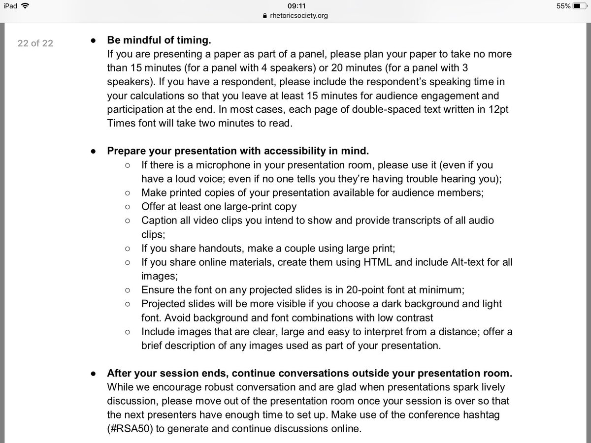

-
These gloves transliterate sign language into text and speech.
#deaf#accessibility@akwyzpic.twitter.com/LZcuGKOWge1:008,934 views -
Dear fellow users of the internet: DID YOU KNOW that HTML is good at displaying text and comes with all sorts of built-in
#accessibility features, like the ability to change background colours, change text size without making lines too big to fit on a page, or use a screenreader?Show this thread -
This wheel chair lets users move upright
#accessibility pic.twitter.com/geWmaVH8odA wheelchair that gives users the freedom to move uprightThis wheelchair allows its users to move both when upright and when sitting. It works with a manual mechanism using chains, similar to a bicycle. -
Interested in sharing your accessibility knowledge and experiences in an article for 24 Accessibility? DM with your email. We're collecting names now for our December article series. Pls RT.
#a11y#Accessibility#Inclusion -
What are the most inclusive spaces you've ever been to? What made them great? What can public spaces do better?
#accessibility -
And DO watch the video. The part where he laughs when he says ppl ask if it'll break if you bite down on it - because the straw he's marketing is made of glass - and says 'of course it breaks like duh who would bite on glass?' EVERY SWEAR WORD IN EVERY LANGUAGE
#ACCESSIBILITYShow this thread -
Famous accessibility icons from Danish Broadcasting Corporation. Any minimalists out there? :-)
#UMAQproject#accessibility pic.twitter.com/k1fzZKnNvW -
Today at our
#AbilitySummit@satyanadella and@jennylayfluffy discussed our commitment to#accessibility and how we can expand opportunities for people with disabilities. pic.twitter.com/Gl2tZ5vdl0 -
Lighthouse audit of a page I helped build almost two years ago vs an audit of the page I just replaced it with today. It really encapsulates the fact that I've both learned so much and still have a lot to learn. I'm definitely proud of that
#accessibility score pic.twitter.com/T6baUtG9HI -
Fantastic student invention! Gloves that transliterate sign language into speech + text, supported by
#makerspace access + now@MIT award winner Brilliant#techforgood in action! More info at https://bit.ly/1WogXSE#innovation#WearableTech#Education#accessibility#creativitypic.twitter.com/fe0JpQ5Kn5 -
It wouldn’t have been a captioning conference without a bit of verbatim-vs-editing controversy... This time - are translators rubbish captioners because they just can’t stop themselves from changing things?
#UMAQproject#accessibility -
6 groups, 6 challenges this past Inclusive Design Challenge was a complete success! Thanks to our partners
@hmn_space and our ingenious hackers.#accessibility#hackathonpic.twitter.com/LMMTvQqlxd -
It is so great to see display options such as 'dark themes' included in
#accessibility considerations! For me this helps because displays with dark-background/ light-text drastically improve my ability to read text, as well as the length of time I can view a screen. https://twitter.com/whimful/status/1002361697787527168 … -
Call out to London charities interested in
#accessibility and#inclusion training related to their buildings environment and management!https://twitter.com/CAE_info/status/1002499879195824128 …Show this thread -
Accessibility is relevant 24/7; not just one day. Accessibility is a moral and social issue, not political. Accessibility is about being inclusive rather than divisive. Accessibility relates to everything; it’s universal. Accessibility matters.
#Accessibility -
When going on a day out results in being transported in the back of an Ambulance to a and e. Would love to sit the Acsess training which
@Uber provide@UberUKsupport its really not acceptable#taxi#accsessfail#accessibility#Disability#disabled#wheelchairuserpic.twitter.com/H1VORzISTA -
finishing up the next new game for Huboodle! Hope to release in a few days. stay tuned!
#hangman#multiplayer#accessibility -
Danish Public Broadcaster DR thought there were too many icons for Access Services, so they came up with their own simple text-based answer. What do you think?
#accessibility#UMAQprojectpic.twitter.com/TcDL44z2yw -
Congratulations to
@rhetsoc for#accessibility guide! Circulating norms formally makes peer support and timely intervention easier.#rsa50pic.twitter.com/9rINz2EAkb -
Just landed in my
#O365 PowerPoint- the new Accessibility Checker - one click fixes for common accessibility issues. The new coloured hyperlink option is also an#accessibility win :) pic.twitter.com/ceoArUSAVq
Loading seems to be taking a while.
Twitter may be over capacity or experiencing a momentary hiccup. Try again or visit Twitter Status for more information.